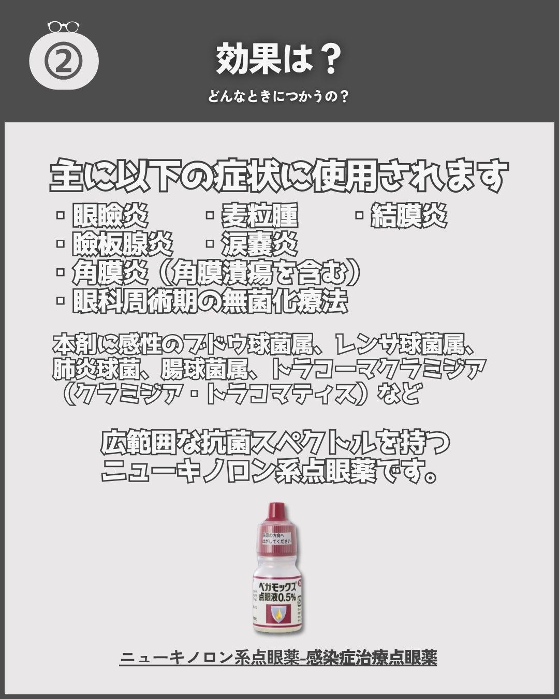
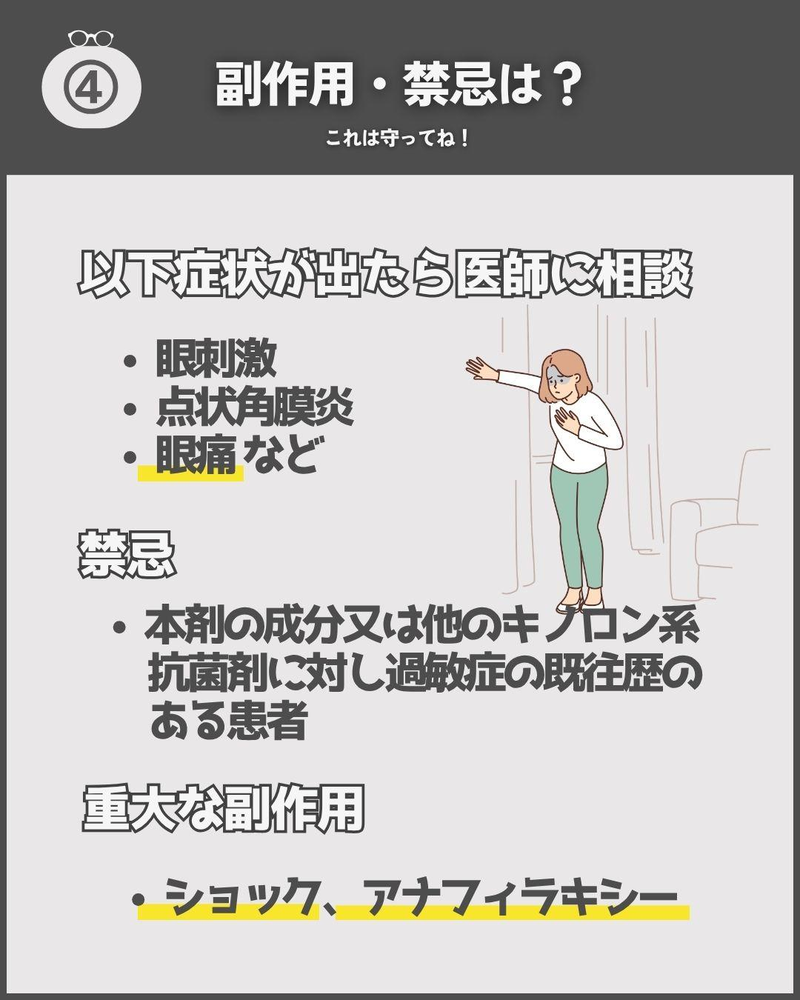

院内マニュアル
クリニック向け 電子付箋運用マニュアル
口頭伝達に頼りがちな連絡を、電子付箋のルールとして可視化。誰が見ても同じ運用になるよう、目的・期限・担当の考え方を整理しました。
- 区分
- 実務経験をもとにした公開用サンプル
- 整理したこと
- 連絡ルール、対応期限、申し送りの標準化
Works
実在情報・患者情報は掲載せず、必要に応じて匿名化・再構成した公開用サンプルとして掲載しています。
院内マニュアル
口頭伝達に頼りがちな連絡を、電子付箋のルールとして可視化。誰が見ても同じ運用になるよう、目的・期限・担当の考え方を整理しました。

チェックリスト
日々の点検、月次確認、引き継ぎ事項を一覧化し、抜け漏れを減らすための表に整えました。

患者様向け資料
手術前後の流れ、持ち物、注意点を患者様とご家族が確認しやすいよう整理した説明資料です。

術後説明資料
術後の姿勢、生活制限、受診目安を時系列で整理し、患者様とご家族が確認しやすい資料にしました。



SNS画像制作
実際の投稿に使用された制作経験があります。制作支援として携わったものであり、有償のSNS運用代行実績ではありません。
公開できない実務資料も、匿名化・再構成を前提に相談できます。